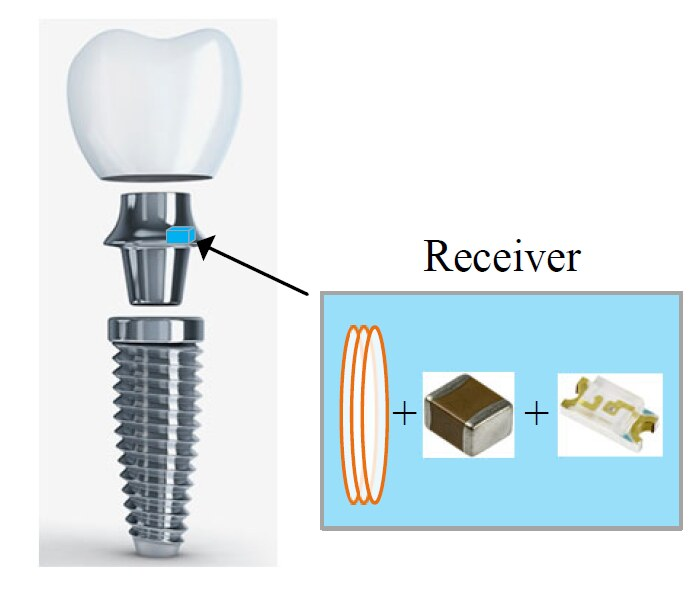
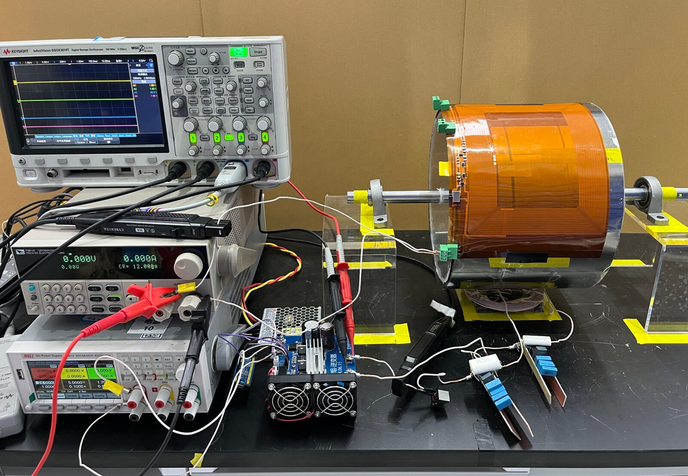
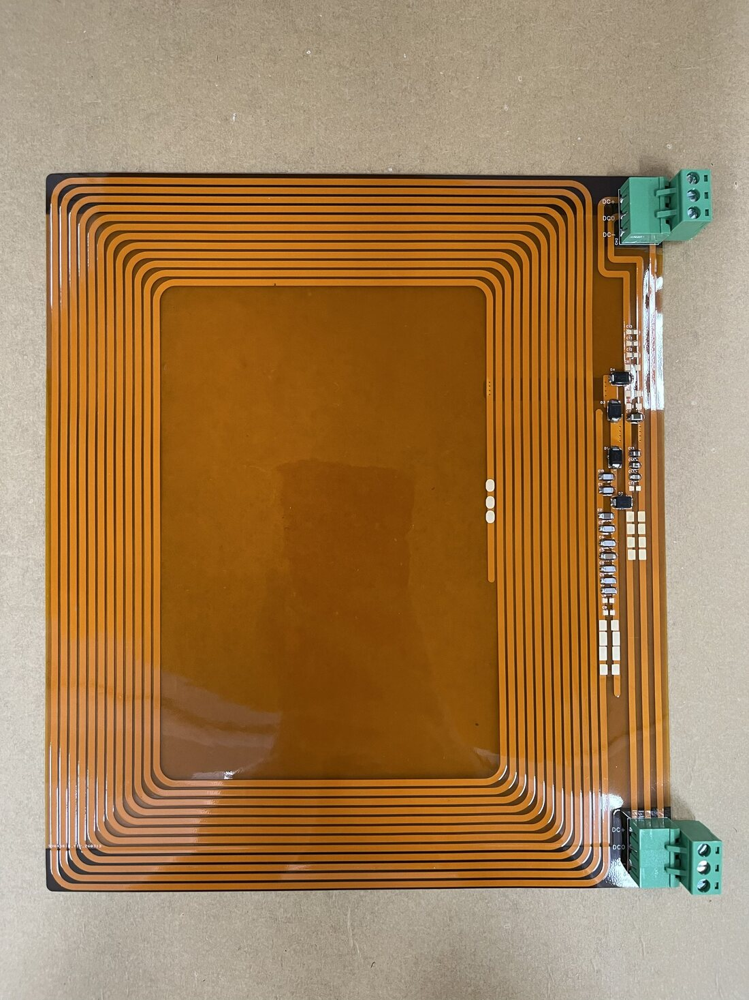
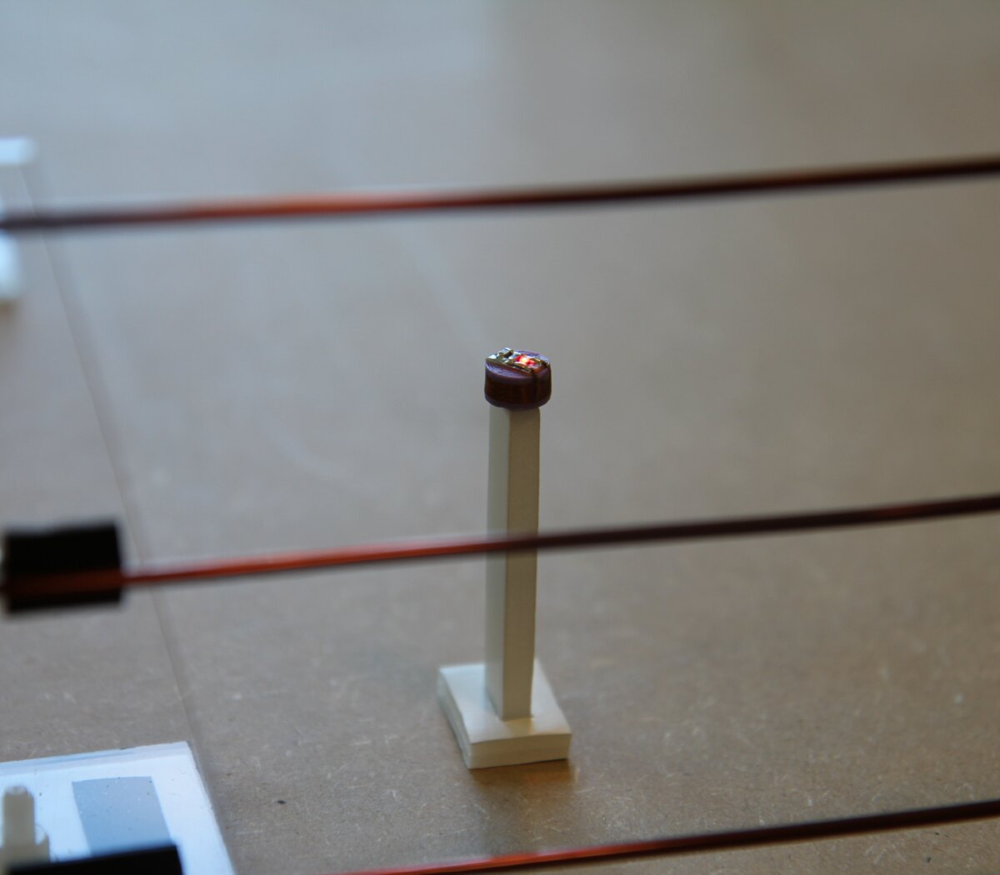
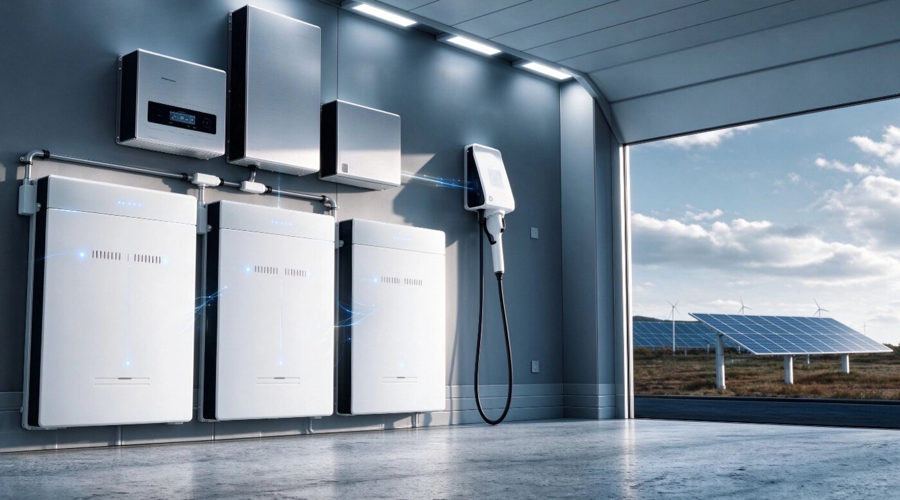
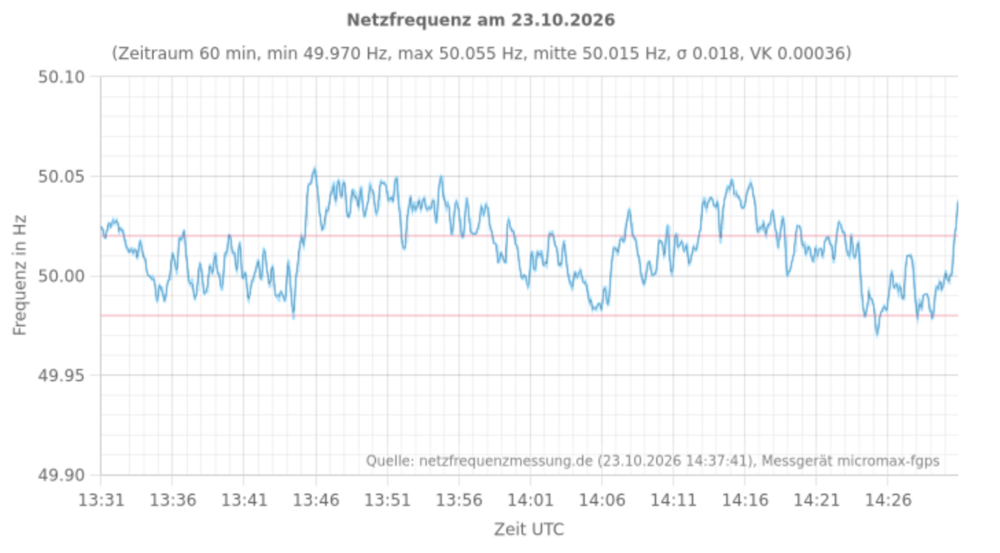

无线电能传输 · 植入式
科研经历一：牙齿植入紫外杀菌系统的无线电能传输设计
- 背景
- 针对植入式装置在尺寸与功率受限条件下的无线能量传输需求，面向牙齿植入紫外杀菌系统。
- 我的工作
- 主导发射与接收线圈的设计，建立参数化仿真模型并遍历线圈尺寸参数空间，完成多方案电磁场仿真验证与性能对比分析。
- 成果
- 形成可复用的线圈参数选型依据，为后续小型化与传输效率优化提供设计支撑。

图片位 · images/wpt1-1.jpg对科研充满热情，专注无线电能传输与电力电子，认同公司文化，期待与团队共同成长。
我专注于电力电子与无线电能传输方向，有 3 段累计 2.5 年的无线电能传输科研经历，覆盖拓扑设计、电磁场仿真、PCB 硬件调试到样机验证的完整流程；硕士毕业项目面向虚拟电厂（VPP）电网辅助服务，研究户用储能的优化控制，并系统梳理了欧洲电力市场与德国并网规范。
我享受把仿真、硬件和系统策略连起来的过程，也看重成果能落地：同一系统设计的 2 套硬质 PCB 副边接收装置和系统样机已交付企业并落地投产，相关论文已被 IEEE TPEL 录用。我认同团队合作、持续创新的工作文化，期待把科研中积累的方法用在真实的产品与工程问题上。

图片位 · images/wpt1-1.jpg
图片位 · images/wpt2-1.jpg
图片位 · images/wpt2-2.jpg
图片位 · images/wpt3-1.jpg
图片位 · images/vpp-system.jpg
图片位 · images/grid-frequency.png↗ mainsfrequency.com先后在集团行政办公室、党委办公室、资产安全部任职，负责行政、党务、人力资源和资产管理：协调部门间工作，负责会务、公文撰写与文件管理；负责人事档案、劳动合同与干部考核；负责固定资产投资与出租。这段经历锻炼了多线任务统筹、跨部门协调和落地执行的能力。
安排定期线路巡查与检修，协助检查供水设施，管理和整理作业记录与工具，对现场设备和作业规范有了第一手的认识。
报道社会民生热点问题，挖掘可能引发关注的话题和影响民生的重要问题，并参加话题研讨。
撰写社评文章，审阅投稿稿件并向专业人士约稿，参与出版前的编辑排版。
对电力电子与无线电能传输研究怀有真诚的热爱：3 段无线电能传输科研、累计 2.5 年，是我愿意长期深耕的方向，也愿意把一个问题研究透。
做事踏实、严谨，对数据和细节负责，遇到困难愿意花时间一步步攻克。
性格开朗、友善，重视团结协作，相信合作共赢，愿意与团队共同成长。